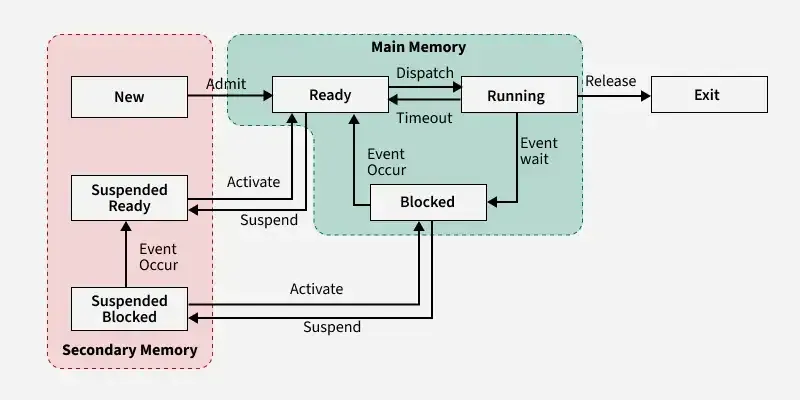

CPU scheduling is the method by which an operating system manages the execution of multiple processes on a computer's CPU. It is responsible for determining which process should be executed at any given time, and for allocating the necessary resources to that process. The goal of CPU scheduling is to maximize the efficiency of the CPU and to ensure that all processes are executed in a timely manner, while trying to minimize both the average time to completion as well as the average delay. To do this, the CPU swaps between processes, giving each process a small amount of time to execute before moving on to the next one. This allows multiple processes to run concurrently, and allows the CPU to make the most of its resources.

There are many different algorithms for CPU scheduling, each with its own advantages and disadvantages. Some of the most common algorithms are first-come first-served, shortest job first, priority scheduling, and round robin. Each algorithm has its own way of determining which process should be executed next, and are designed to cater to different scenarios and workloads.
- First-come first-served is the simplest, as processes are executed in the order that they arive.
- Shortest job first is designed to minimize the average time to completion, as it executes the shortest processes first.
- Priority scheduling assigns a priority to each process, and executes the process with the highest priority first.
- Round robin is designed to give all processes an equal share of the CPU, cycling through them in an equal manner.
Sources: